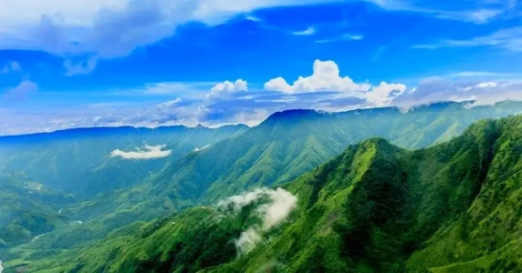

OH The Places You'll Go!!
.jpg)
It's Winters Already!!!
Check out the Exciting Places to Visit in India in Winters
Here's a list of 10 Best places to visit in India in the Winter Months
The Winter Season has already set its feet in India and apart from sipping hot chocolate curled up in your quilt, this is the season to explore the Beautiful Places
of India, wrapped up in a Snow Sheet. Check out all these exciting places to visit in the Winter Months and make the most of your New Year Holidays!!
- Gulmarg, Kashmir
.jpg)
Gulmarg, known as Gulmarag, in Kashmiri, ia a town, Hill Station, popular tourist destination, popular skiing destination and a
notified area commitee in the Baramulla district in the Inidan Union Territory of Jammu and Kashmir.
It is located at a distance of 31 km from Baramulla and 49 km from
Srinagar. The town is situated in the Pir Panjal Range
in the Western Himalayas and lies within the boundaries of
Gulmarg Wildlife Sanctuary. One of the main attractions in Gulmarg is the Gulmarg Gondola,
the Highest Cable Car in the world. The 1st phase of the Gondola takes tourists to the height of 8530 ft to Kongdori Station and the second stage of the Gondola goes up to the height of 12293 ft. Tourists can
enjoy Horse Riding and can go riding to the magnificent “Strawberry Valley”,
Leopards Valley and ride up to “Kongdori” to see the frozen lake of “Al- Pathar”.
Gulmarg in winter is a magnificent experience, fully covered in a white blanket of Snow which turns it into a skiers paradise. The natural slopes here are untouched and prove to be a challenge
to ace skiers! Besides the scenic side to Gulmarg, winter time in Gulmarg is a season of festivities with celebrations of “White Christmas” and New Year parties.
- Manali, Himachal Pradesh
.jpg)
Manali is a town, near Kullu town in Kullu district in the Indian state of Himachal Pradesh. It is situated in the northern end of the Kullu Valley, formed by the Beas River.
The town is located in the Kullu district, approximately 270 kilometres north of the state capital of Shimla and 544 kilometres northeast of the national capital of New Delhi.
Over the last few years, Manali has evolved into a place loved by young people looking for more extended stays. With ambient cafes, good wifi availability, small eateries, and convenient shops,
Old Manali is among the favorite neighbourhood for such people. In addition, many homestays and hostels offer dorm beds on cheap rates for longer durations. Apart from vacations and workations, Manali is a must-visit for trekkers,
as it's an excellent base for exploring this side of the Himalayas. River Beas provides great rafting options in the nearby town of Kullu.
Adjoining the Parvati river lies the Parvati Valley, with Kasol, Manikaran, Tosh, and small villages attracting travelers for extended stays.
Atal Tunnel allows travellers to reach Sissu within a few hours, making Spiti more accessible.
Tourists flock to Rohtang Pass & Solang valley for various adventure activities,
including skiing, paragliding, horse-riding & zorbing. It snows the most in January & February, followed by December and March.
- Not to Miss: Beas Kund Trek
- Dharamshala, Himachal Pradesh
.jpg)
Serenely spiritual Dharamshala is home to the largest Tibetan temple outside of Tibet. It's known for its religious iconography and is the monastery of the Dalai Lama, who holds public lectures a few times a year.
Once you've restored your spiritual energy, enjoy a picturesque stroll to Bhagsu Waterfall or climb the hill to Triund to bask in stunning views of the Himalayas.
Dharamshala is home to Mcleodganj as well as other structures which remind you of its colonial past. The main street is dotted with shops selling Tibetan arts & crafts, along with eateries that serve a variety of Tibetan dishes, from Thenthu to momos.
Bhagsunag Falls is another place to visit during your trip to Dharamsala. It lies in close proximity to Mcleodganj and the Bhagsunag Temple.
Dharamshala is also home to several temples, with the two most famous among them being the Chamunda Devi Temple and Kunal Pathri Temple.
The temple reveres the Goddess in her most fearsome form, as a destroyer of evil. Then there is the Gyuto Monastery, which was built in 1989 to commemorate the receiving of Nobel Peace Prize by the Dalai Lama. There are a few trekking trails in Dharamshala,
like the Triund Trek, Kareri Lake Trek, and the Indrahar Pass Trek that bring out the flawless amalgam of beauty in the Himalayas.
Some treks in Dharamshala, for example, the Triund Trek can be completed in a day, and that too without an aide. Nevertheless, treks like Kareri Lake Trek and the Indrahar Pass Trek should be serenely completed in a couple of days, and ideally with an aide.
- Not to Miss: Thatharna Trek
- Udaipur, Rajasthan
.jpg)
Udaipur, the "City of Lakes", stands as a jewel in the crown of Rajasthan, India. Nestled amidst the Aravalli Range, this city captivates visitors with its regal charm, historic grandeur, and scenic landscapes.
Also known as the "Venice of the East", Udaipur is inarguably one of the most romantic cities in India. At the heart of Udaipur lies the iconic Lake Pichola, flanked by the majestic City Palace, a sprawling complex of palaces, courtyards, and gardens showcasing exquisite Mewar architecture.
Boating through the shimmering Lake Pichola is one of the most beautiful sights and highlights of every Udaipur trip. The ethereal Jag Mandir and Jag Niwas, also known as the Lake Palace, appear to float on the serene waters of Lake Pichola, adding a fairytale touch to Udaipur's skyline.
Another picturesque lake, Fateh Sagar, is embraced by hills on three sides and dotted with islands, offering a tranquil escape in the midst of nature. The Saheliyon Ki Bari, a historic garden adorned with fountains, kiosks, and marble elephants, is a testament to the royal lifestyle of the Maharanis.
Udaipur's architectural splendors extend to the intricately carved Jagdish Temple and the Sajjangarh Palace, also known as the Monsoon Palace, which offers panoramic views of the city and its lakes. Udaipur's vibrant markets, like Bada Bazaar and Hathi Pol, beckon with traditional Rajasthani crafts, textiles, and jewelry, providing a delightful shopping experience.
The Shilpgram Crafts Fair, held annually, showcases the rich cultural diversity of Rajasthan through traditional art, crafts, and performances. Culinary enthusiasts can savor the flavors of Udaipur with its delectable Rajasthani cuisine, including dal baati churma, gatte ki sabzi, and the iconic dal kachori.
- Not to Miss: Udaipur Fort
- Auli, Uttarakhand
.jpg)
Auli is in Chamoli district in the Himalayan mountains of Uttarakhand, India. Dotted with the apple orchards, old oaks, and pine trees there is no dearth of natural beauty in Auli. Apart from skiing you can also go for numerous treks in the hills of Garhwal Himalayas and enjoy the spellbinding views of the snow-draped mountains.
Auli is a popular hill resort in the Himalayan range dating back to the 8th Century AD. The Garhwal Mandal Vikas Nigam Limited (GMVL) runs a ski resort and a ski rental shop. Auli is a popular skiing destination in India because of its glittering slopes and clean environment. Dotted with apple orchards, oaks and deodars, Auli is a popular hill town with numerous ski resorts situated amidst the Himalayan range. Located at 2800 meters above sea levels, it is home to mountain ranges
of Nanda Devi, Mana Parvat and Kamat Kamet. Many religious destinations are also scattered around Auli.
It is believed that Shankracharya had blessed Auli with his visit.
- Not to Miss: National Championship of Skiing
- Mussourie, Uttarakhand
.jpg)
Mussoorie is one of the most popular hill stations located at a distance of 290 km from Delhi in the Dehradun district of Uttarakhand. With a backdrop of the Shivalik range of Himalayas and Doon valley, Mussoorie,
also known as Queen of The Hills, stands at an altitude of 7000 feet above sea level. With a cool and pleasant climate throughout the year, Mussoorie was once the British summer capital. One of the most popular tourist attractions in Mussoorie is The Mall (also known as the Mall Road), which is a slightly steep boulevard with eateries and other shops lining its entire stretch.
From the little houses spread around the area to the architecture of even the lamp posts, The Mall gives off a distinct colonial vibe. Another major highlight of Mussoorie is the Ropeway to Gun Hill. Gun Hill is the second highest peak in Mussoorie, and tourists can avail of the cable car ropeway ride to Gun Hill, which offers an enchanting view of the entire city as well as the surrounding Himalayan mountains.
The adjoining little hill station of Landour, along with Mussoorie, Barlowganj and Jharipani together form the greater Mussoorie. With a lot of waterfalls, the town of Dhanaulti in the vicinity and the remains of colonial architecture, Mussoorie has everything to make a memorable vacation.
- Not to Miss: Sunset at Lal Tibba
- Dalhousie, Himachal Pradesh
.jpg)
Dalhousie is a popular hill station spread out over five hills in Himachal Pradesh boasting views of the snow-capped peaks of the Dhauladhar ranges. Famous for its meadows, dense forests, and waterfalls, it is especially a favourite amongst honeymooners and family vacationers.
The Scottish and Victorian-era architecture of churches like the St Patricks Church, St John's Church and St Francis Church reminds of its colonial heritage.Dalhousie is also known for woollen Himachali shawls, Tibetan handicrafts, Chamba handkerchiefs, and other paraphernalia.
These can be bought from The Mall Road which is the town's main market. A trip to Dalhousie is incomplete without Khajjiar. Known as the mini Switzerland of India, Khajjiar is just 21 km away. The little hill town is famous for its spellbinding vistas of mountains loaded in white snow and lush green pastures of land.
Kalatop Wildlife Sanctuary in Khajjiar is famous for an exquisite variety of endangered species and breathtaking views of the mountains in the backdrop. Chamba, located almost 50km from Dalhousie, is also worth visiting.
- Rann of Kutch, Gujarat

Rann of Kutch is a massive expanse of cracked earth, inland from the sea, that promises to take your breath away. The nothingness for miles is both nerve wracking and stunning with small oasis of water bodies and shrub forests doubling up as homes for pink flamingoes and wild asses.
Tribal hamlets with cylindrical mud bhungas (huts) are the epicenter for Kutchi embroidery, tie and dye, leatherwork, pottery, bell metal craft and the famous Rogan painting by the only surviving expert family. Approximately 200 km east of the Rann, is the Little Rann of Kutch, which houses the 4953-sq-km Wild Ass Sanctuary.
It homes the only remaining population of the chestnut-coloured Indian wild ass (khur), as well as blue-bulls, blackbuck and chinkara. Famous for the Rann Utsav - a two-month long cultural festival - this place looks something straight out of dreams.
Traditional food, authentic handicrafts, desert safari and star gazing, complemented by a wide expanse of white land, oh what a sight it is! The Kutch Festival invites lakhs of tourists from all around the world. The nearby attractions include Kalo Dungar, popularly known as The Black Hills,
Narayan Sarovar and Chhari Dhand Wetland Reserve.
- Not to Miss: Camping at Dhordo Village
- Ooty, Tamil Nadu

Nestled amidst Nilgiri hills, Ooty, also known as Udagamandalam, is a hill station in Tamil Nadu which serves as a top-rated tourist destination.
Once regarded as the summer headquarters of the East India Company, the Queen of the hills is a picturesque getaway.
Dotted with tea gardens, serene waterfalls, winding country lanes, and charming colonial architecture, Ooty is the perfect respite everyone. Popular among couples and honeymooners, Ooty allures its visitors with the panoramic views of the Nilgiri mountains.
Spread over a huge area of 22 hectares and with more than 650 species of flowers and trees, the Botanical Garden is a horticulturist's delight. Surrounded by eucalyptus trees, grassy meadows, and encampments of the indigenous Toda tribe, the river flows over a series of waterfalls, one of which cascades down 61 metres, called the Pykara Waterfalls.
Ooty Lake, built in 1825, is a 2.5-kilometre long lake meandering through the scenic beauty of the Nilgiris, and a popular picnic spot in Ooty.
- Not to Miss: A ride on the Nilgiri Mountains Toy Train
- Shillong, Meghalaya

Nestled amidst the pine-clad hills, Shillong, the capital of Meghalaya, unfolds like a picturesque canvas at an elevation of 1496 meters. Revered as the 'Scotland of the East, the city offers a delightful blend of captivating landscapes, pleasant weather, and rich traditions.
Shillong derives its name from Lei Shyllong, an idol worshipped at the Shillong Peak, and is home to diverse tribal communities like Khyrim, Mylliem, Maharam, Mallaisohmat, Bhowal, and Langrim, each contributing to the vibrant cultural tapestry.
One of the city's prominent attractions is Umiam Lake, a sprawling reservoir surrounded by hills that offer a serene escape. The tranquility of the Elephant Falls, cascading gracefully amidst lush greenery, adds to Shillong's natural allure.
For those seeking adventure, the Laitlum Canyons unveil breathtaking panoramic views, making it a must-visit for trekking enthusiasts.
Shillong is not just a haven for nature lovers; it boasts museums and cultural gems like the Don Bosco Museum, showcasing the indigenous cultures of the Northeast. The Meghalaya State Museum is another treasure trove, delving into the state's heritage through artifacts and exhibits.
The bustling Police Bazar, a vibrant market, captures the pulse of Shillong with its lively atmosphere and diverse shopping experiences.
Venturing beyond the city limits, Mawphlang stands as a testament to Meghalaya's cultural heritage, known for its sacred groves and traditional rituals. On the other hand, Mawlynnong, acclaimed as the cleanest village in Asia, beckons with its living root bridges and pristine landscapes.
Shillong's musical heartbeat resonates through its title as the "Music Capital of India." The city's westernized culture and youthful vibe contribute to its dynamic music scene. Throughout the year, music events and festivals celebrate Shillong's rich musical heritage.
- Not to Miss: A trip to the cleanest village in Asia, Mawlynnong
Mentioned above are some of the best places to visit in winters in India, but the list is certainly not confined to these. If you are not the one who like to travel long distances during winters, there are many ways to enjoy the season by staying close to your city. All you need is the willingness to leave the bed behind and start exploring!!
Happy New Year!!